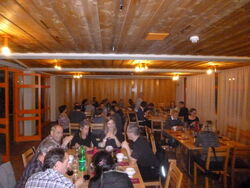

Alpinrunner
Jahresrückblick 2016
Chur

Am Samstag, 19. November - Feierte wir bei einem feinen, gemütlichen Nachtessen unter Lauffreunden mit Jahresrückblick und vielen Fotos
Die schönsten Fotos des Jahres waren zu sehen bei den Bildershows:
vom Schneeschuhlaufen, Winterlauftraining, von der Laufwoche in Naturns/ Südtirol, Trails in Korsika, von Wettkämpfen an Bergmarathons, und den Wochenendetrainings. Wir sahen uns das Jahresprogramm 2017 an und Informierten von unseren Vorhaben für das Nächsten Jahr.
Am Sonntag darauf liefen wir eine Runde ab Lehringshaus
Teilnehmerliste
- Marco und Petra
- Röbi und Maria
- Martin und Isabella
- Thomas
- Ruedi
- Michi
- Brigitte
- Micheline *
- Joschi und Nartano *
- Peter und Monika *
- Barbara *
- Ursula B. *
- Dani U. *
- Ayhan *
- Marc H.
- Jean-Marie und Marilene
- Christoph und Bea *
- Rösli
- Dani und Sybille
- Michel und Patrizia
- Albert und Helena
- Stefan K.
- Caroline
- Kasper
- Doris
- Jeroen und Edith
- Martin L.
- Petra B. *
- Désirée M.